使用keil5（MDK）开发
1、切换到Project Manager界面，设置Project Name（工程名称）和Project Location（工程路径），最后点击GENERATE CODE来生成代码。
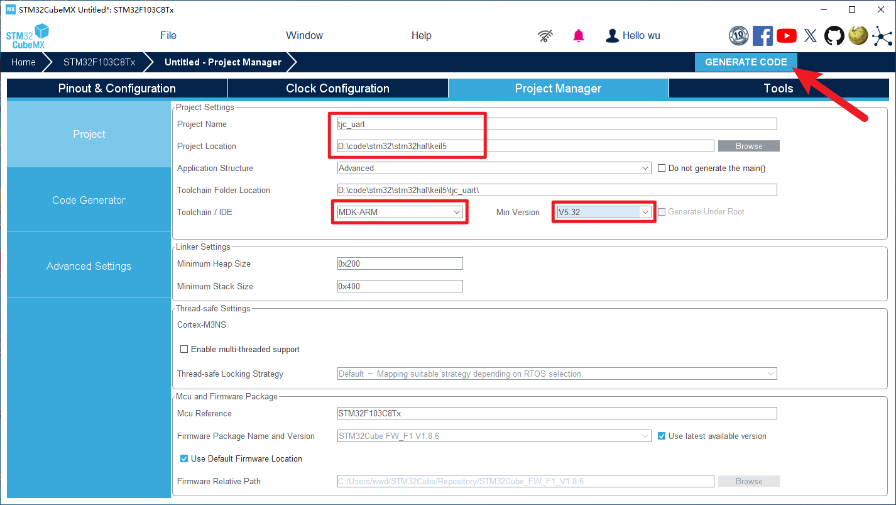
2、点击打开文件夹
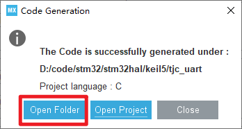
3、将淘晶驰串口屏头文件复制到这个目录下
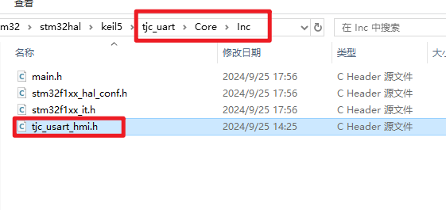
4、将淘晶驰串口屏源文件复制到这个目录下（这两个文件会在工程里提供，需要自行从工程里找到然后导入客户自己的工程中）
下载地址 下载《stm32与串口屏双向通讯》例程
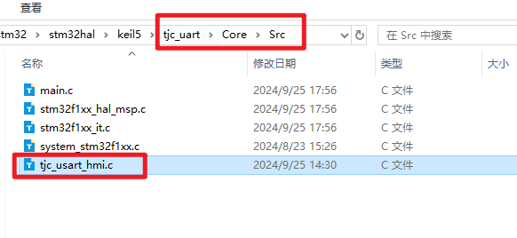
5、打开工程
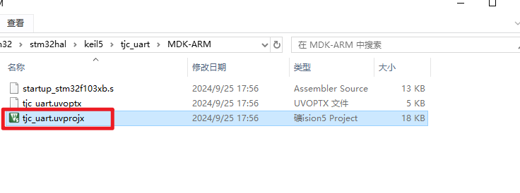
6、将刚刚的文件添加到工程文件中
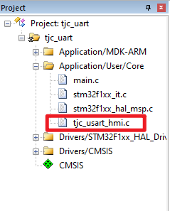
7、添加include和define定义
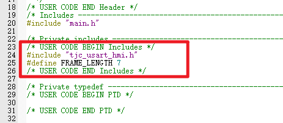
8、添加初始化和变量定义
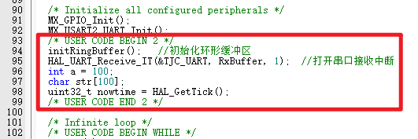
9、在while里添加串口发送和解析的代码
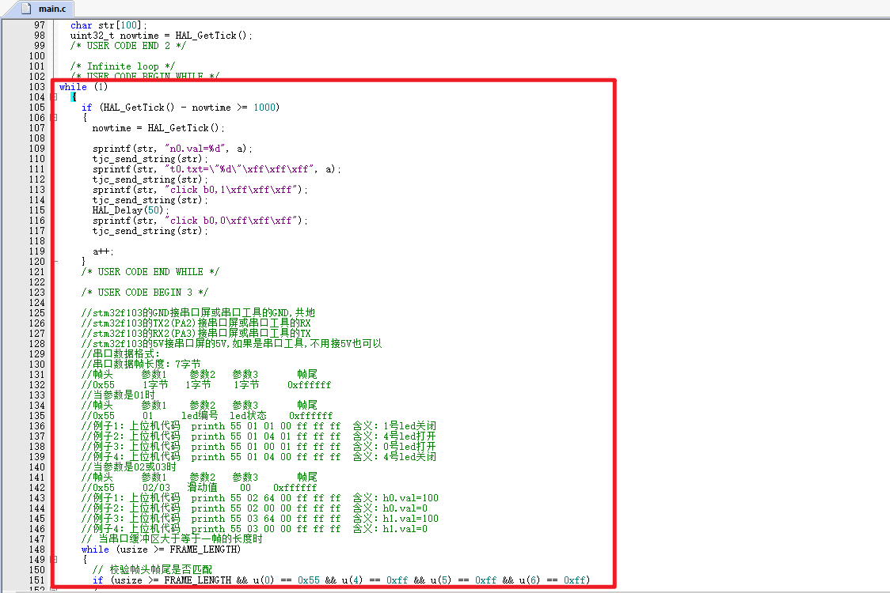
10、点击魔法棒的图标，配置一下调试器
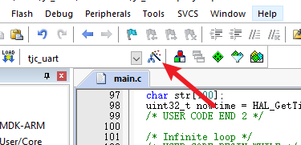
11、选择你的调试器，我这里使用的是st-link，选择完毕后点击Settings
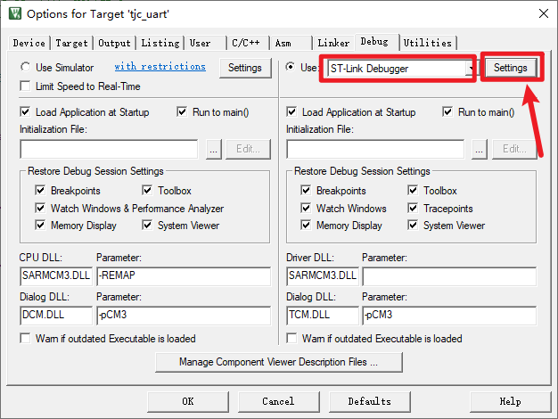
12、切换到Flash Download标签，勾选 Reset and Run
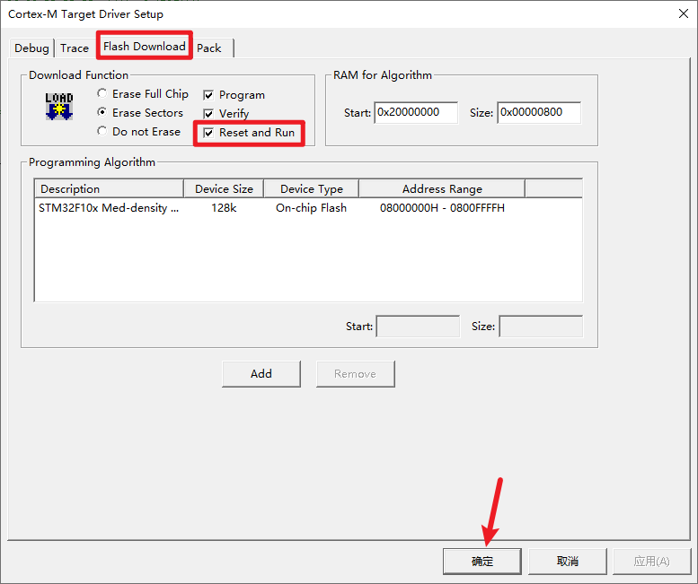
13、点击Pack，取消勾选Enable，所有设置就完毕了
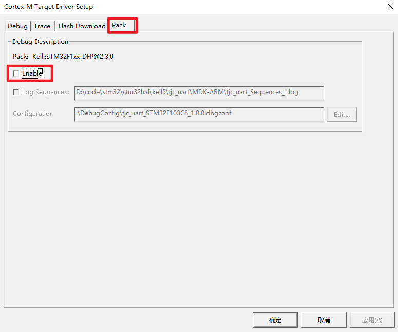
14、主界面的两个按钮分别是编译和下载
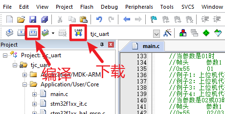